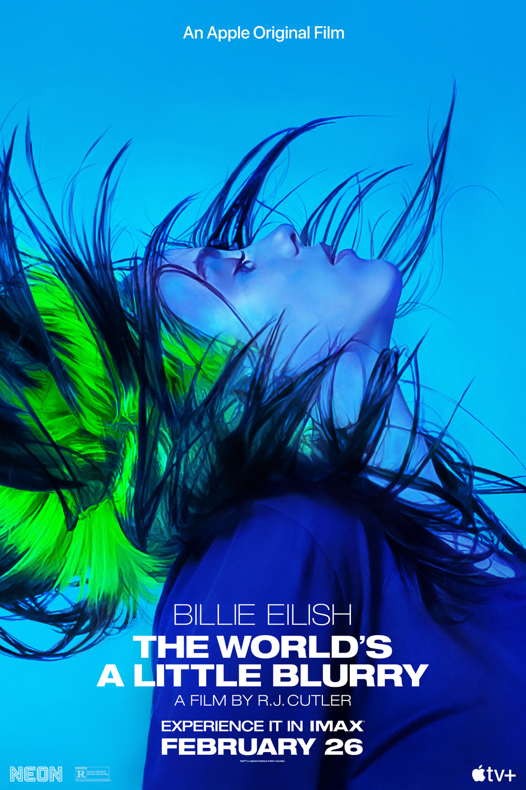

“Billie Eilish: The World’s A Little Blurry” tells the true coming-of-age story of the singer-songwriter and her rise to global superstardom. From award-winning filmmaker R.J. Cutler, the documentary offers a deeply intimate look at this extraordinary teenager’s journey, at just 17 years old, navigating life on the road, on stage, and at home with her family, while writing, recording and releasing her debut album “WHEN WE ALL FALL ASLEEP, WHERE DO WE GO?”